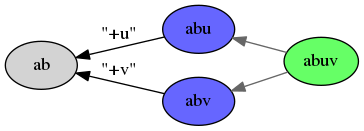

Partial visibility¶
Representation¶
Member-sets, diff and apply
For any given message m, some parents might not be visible to some of the members. Do we also hide the parent references then? How to represent this.
Security properties we need to keep in mind, and how to achieve these - e.g. can’t allow arbitrary different parent pointers for different members.
Operations on the causal order¶
Define “cut” in the graph, generalisation of “before” and “after”.
Expand definition of “acked-by”.
Expand algorithms for FIN/ACK.
Rejoin semantics¶
Unclear what “parent-pointer” semantics should be, e.g. when I rejoin, should I “point to” my last message from before I left? Probably not - unclear what the semantics are, not intuitive, etc.. but could explore further.
If we do disallow the above, we then need to adjust “by(u) is a total order” checks. In both cases (allow vs disallow), other members should still be able to identify “this is the same person” across both sub-sessions. (This is for usability and convenience; if you must be anonymous just rotate public keys.)
Merge algorithm¶
Under partial visibility, our merge algorithm from the previous section does not work consistently. Here are some examples that indicate the problem.
(Taken literally, they ignore that by(u) must be a total order; but we can regain this property by rewriting “a” instead as multiple members {a1, a2, a3, ...}, however many is necessary. But for our current purposes, it’s easier to follow if we shortcut this and just write “a” instead.)
In this example, a has full visibility of the history, and can execute the merge as normal:
TODO: simplify this example
![digraph merge_full_visibility {
rankdir=RL;
node [style="filled"];
label="visible to a, not b";
O [label="a"];
A [label="auv"];
A1 [label="au"];
A2 [label="av"];
A -> O [label="+uv"];
A1 -> A [label="-v"];
A2 -> A [label="-u"];
subgraph cluster_d {
label="visible to a, b";
B [label="ab"];
C [label="abu",fillcolor="#6666ff"];
D [label="abv",fillcolor="#6666ff"];
X [label="ab",fillcolor="#66ff66"];
C -> B [color="#666666"];
D -> B [color="#666666"];
X -> C [color="#666666"];
X -> D [color="#666666"];
}
B -> O [label="+b"];
C -> A1 [color="#666666"];
D -> A2 [color="#666666"];
}](../_images/graphviz-1e3a297fb55a7fb9dfe9065eca04f34bfa08ab35.png)
But if b executes the merge, they have an incomplete view of history, and get a different result:

Furthermore, b cannot distinguish between this history, vs an alternative history where a does actually get the same result as b:
![digraph merge_full_visibility_alternative {
rankdir=RL;
node [style="filled"];
label="visible to a, not b";
O [label="a"];
A1 [label="au"];
A2 [label="av"];
A1 -> O [label="+u"];
A2 -> O [label="+v"];
subgraph cluster_d {
label="visible to a, b";
B [label="ab"];
C [label="abu",fillcolor="#6666ff"];
D [label="abv",fillcolor="#6666ff"];
X [label="abuv",fillcolor="#66ff66"];
C -> B [color="#666666"];
D -> B [color="#666666"];
X -> C [color="#666666"];
X -> D [color="#666666"];
}
B -> O [label="+b"];
C -> A1 [color="#666666"];
D -> A2 [color="#666666"];
}](../_images/graphviz-cf9f964b8a4baa7339c60766bed3a3d761ba138e.png)
Notice how the subgraph “visible to a, b” is identical in both cases, including even its edges to nodes outside the subgraph. We conclude that there is no way for “b” to properly execute the merge algorithm.
Further options¶
At this point maybe we want to go back to exploring CRDTs, since they don’t require history.
Another option is to force the state representation to increase along a partial
order, in the same way that state-based CRDTs do. For example, instead of
representing {a, b, u} in the first graph above, we could represent it as
{a: 1, b: 1, u: 1, v: -1} where:
- e.g.
1means they are a member of that message, and have been included 1 times before - e.g.
-1means they are not a member of that message, but previously was, and have been excluded 1 times before.
This would allow b to execute the merge correctly. However it reveals to them that v was part of the previous sub-session, which is what we were trying to avoid [1]. Nevertheless, we do still retain message {contents, history} privacy against b. (TODO: there is probably a CRDT that is equivalent to this.)
| [1] | In our example there is also a message with members abv that b
sees, so b will find out regardless - but the author of the message with
members abu cannot rely on this fact in general. |
TODO: write up some reasons that we partially figured out, on why it’s probably impossible to avoid this privacy leak to b, if we want everyone to keep a consistent view of the session.